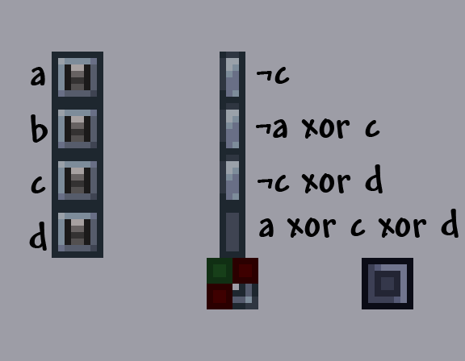

Find a gate from a truth table
The output column of the truth table, bottom row first: 4, 8 or 16 characters of 0, 1, or x for don't care.
Solve a multi output module
How to use
| A | B | C | D | f |
|---|---|---|---|---|
| 0 | 0 | 0 | 0 | 0 |
| 0 | 0 | 0 | 1 | 0 |
| 0 | 0 | 1 | 0 | 1 |
| 0 | 0 | 1 | 1 | 1 |
| 0 | 1 | 0 | 0 | 0 |
| 0 | 1 | 0 | 1 | 0 |
| 0 | 1 | 1 | 0 | 1 |
| 0 | 1 | 1 | 1 | 1 |
| 1 | 0 | 0 | 0 | 0 |
| 1 | 0 | 0 | 1 | 1 |
| 1 | 0 | 1 | 0 | 1 |
| 1 | 0 | 1 | 1 | 0 |
| 1 | 1 | 0 | 0 | 0 |
| 1 | 1 | 0 | 1 | x |
| 1 | 1 | 1 | 0 | x |
| 1 | 1 | 1 | 1 | x |

Why
Terraria wires don't power a device, they toggle it. Two wires joined together act like an XOR gate for free, so a circuit built around XOR needs far fewer gates and lamps than one built from a textbook formula. TerraBool searches for those circuits.
Entering a truth table
Type the output column f of the truth table as one string, bottom row first. 2, 3 or 4 inputs need 4, 8 or 16 characters; the field turns blue at a valid length. Use 0, 1, or x (any lower case letter) for a don't care. The table here is entered as xxx0011011001100.
Single: one output
Every cheapest expression is listed. Open one to see its module drawn tile by tile; the first one opens by itself. They all cost the same, so pick whichever fits your build.
Some functions need two gates whose outputs share a wire. These are listed in two columns: pick one from each, and the module for that pair is drawn below.
Reading an expression
⊕ (¬c, ¬ac, ¬cd, acd)
- The symbol is the gate: ∧ is an AND gate, ⊕ an XOR gate (on when exactly one lamp is on). A ¬ before it inverts the output: the output is off while the gate is on.
- Each term is one lamp, wired to the inputs it names. Letters written together (acd) are wires joined on one lamp, which XORs them.
- A ¬ before a term means that lamp starts on.
Multi: several outputs sharing gates
Add one truth table per output (pasting several lines adds them all). They must have the same length and the same don't cares. Gates are shared between outputs: an output wired to several gates is their XOR. Limit is how many wired modules to find before stopping; the counter shows wired / invertible / tested matrices.
Results come best first: every output on its own wire (no diodes), then one colour per wire, then fewest lamps. Each result shows its module and lamp count; the matrix and the wire and lamp lists that led to it are under Intermediate steps.
A result marked Wiring not verified ran out of search time. try wiring searches it again with no time limit; Abort stops that.
Reading a module picture
- Wire colours are inputs, entering at the top: red = a, blue = b, green = c, yellow = d.
- Lamps stack on their gate (G), the bottom lamp on the gate tile. Outputs (O) sit at the bottom.
- Lit tiles show the state with every input off: build them that way.
- An empty column only carries input wires into lamps from the side.